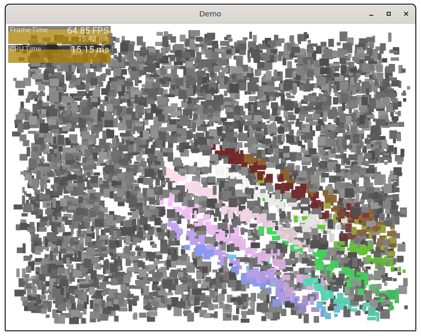

The demos actually require MulleUICore to run. It's too tedious to set everything up again in C for linking with glfw. And basically, that's what MulleUICore is there for anyway.

This is a mulle-sde project.
It comes with its own virtual environment and list of dependencies. To fetch and build everything say:
mulle-sde craft --release